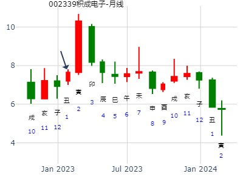
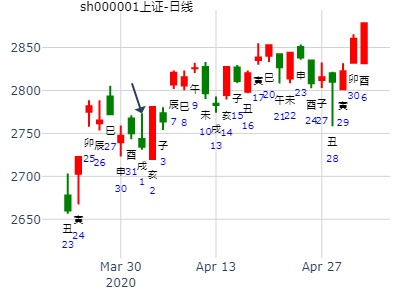
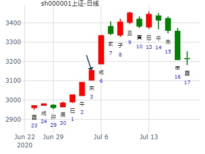

主帖标题: [大盘指数] 预测股市大盘未来趋势综合贴！
以下是引用天行健在2009-2-28 13:03:00的发言：
在奇门讲课群进行预测分析的，以下是过程：
岸芷汀兰(190943080) 22:20:32
昨晚看报纸说2009年股市猜测,当时有感起卦,到底2009年股市是个什么状况呢?
起卦方式：时间起卦
公历时间：2009年1月1日21时16分
农历时间：戊子年 十二月初六日亥时
干支：戊子年 甲子月 丙午日 己亥时
旬空：午未 戌亥 寅卯 辰巳
神煞：驿马─申 桃花─卯 日禄─巳 贵人─酉，亥
离宫：火山旅 离宫：离为火（六冲）
六神 伏 神 【本 卦】 【变 卦】
青龙 ▄▄▄▄▄ 兄弟己巳火 ▄▄▄▄▄ 兄弟己巳火 世
玄武 ▄▄ ▄▄ 子孙己未土 ▄▄ ▄▄ 子孙己未土
白虎 ▄▄▄▄▄ 妻财己酉金 应 ▄▄▄▄▄ 妻财己酉金
螣蛇 官鬼己亥水 ▄▄▄▄▄ 妻财丙申金 ▄▄▄▄▄ 官鬼己亥水 应
勾陈 ▄▄ ▄▄ 兄弟丙午火 ▄▄ ▄▄ 子孙己丑土
朱雀 父母己卯木 ▄▄ ▄▄ 子孙丙辰土 世X-> ▄▄▄▄▄ 父母己卯木
岸芷汀兰(190943080) 22:20:50初六：旅琐琐，斯其所取灾。 象曰：旅琐琐，志穷灾也。
在外旅行之人,总处在不安定之中,因为志穷,招致有灾.看来又是熊市.
1、2月------旅琐琐，斯其所取灾。跌
3、4月------旅即次，怀其资，得童仆贞。小涨
5、6月------旅焚其次，丧其童仆，贞厉。大跌
7、8月------旅于处，得其资斧，我心不快。涨
9、10月-----射雉一矢亡，终以誉命。小涨
11、12月----鸟焚其巢，旅人先笑后号啕。 丧牛于易，凶。跌
岸芷汀兰(190943080) 22:21:12呵呵----我的预测；
岸芷汀兰(190943080) 22:35:402009年股市状况,昨晚看报纸说2009年股市猜测,当时有感起卦,到底2009年股市是个什么状况呢?
王注：(年卦用元旦时间卦，好笑，仅供参考）
主帖标题: 300178 腾邦国际本周涨跌
明天14日涨跌 手摇卦
公历时间：2020年1月13日21时36分
干 支：己亥年 丁丑月 乙卯日 丁亥时
旬 空：辰巳 申酉 子丑 午未
离宫：火山旅 离宫：离为火（六冲）
六神 伏 神 【本 卦】 【变 卦】
玄武 ▄▄▄▄▄ 兄弟己巳火 ▄▄▄▄▄ 兄弟己巳火 世
白虎 ▄▄ ▄▄ 子孙己未土 ▄▄ ▄▄ 子孙己未土
螣蛇 ▄▄▄▄▄ 妻财己酉金 应 ▄▄▄▄▄ 妻财己酉金
勾陈 官鬼己亥水 ▄▄▄▄▄ 妻财丙申金 ▄▄▄▄▄ 官鬼己亥水 应
朱雀 ▄▄ ▄▄ 兄弟丙午火 ▄▄ ▄▄ 子孙己丑土
青龙 父母己卯木 ▄▄ ▄▄ 子孙丙辰土 世× ▄▄▄▄▄ 父母己卯木
积成电子3个月。旅之离。风生水起
时间：2023年1月31日11点7分 星期二
干支：壬寅年 癸丑月 己丑日 庚午时 （旬空：午未）
六神 藏爻 火山旅 离宫 离为火 离宫
勾陈 ■■■■■■兄弟巳火 兄弟巳火■■■■■■
朱雀 ■■ ■■子孙未土 子孙未土■■ ■■
青龙 ■■■■■■妻财酉金 应 妻财酉金■■■■■■
玄武 官鬼亥水■■■■■■妻财申金 官鬼亥水■■■■■■
白虎 子孙丑土■■ ■■兄弟午火 子孙丑土■■ ■■
腾蛇 父母卯木■■ ■■子孙辰土 世 ×→ 父母卯木■■■■■■

寅卯都是父母，但只应了卯月大跌。
主帖标题: 此卦不宜追高
公历起卦时间：2020年2月10日22时3分 (按农历时间起卦)
干支：庚子年 戊寅月 癸未日 癸亥时 （日空：申酉）
神煞：驿马－巳 桃花－子 日禄－子 贵人－卯，巳
离宫：火山旅 离宫：离为火 (六冲)
六神 伏神 本 卦 变 卦
白虎 兄弟己巳火 ▅▅▅▅▅ 兄弟己巳火 ▅▅▅▅▅ 世
腾蛇 子孙己未土 ▅▅ ▅▅ 子孙己未土 ▅▅ ▅▅
勾陈 妻财己酉金 ▅▅▅▅▅ 应 妻财己酉金 ▅▅▅▅▅
朱雀 官鬼己亥水 妻财丙申金 ▅▅▅▅▅ 官鬼己亥水 ▅▅▅▅▅ 应
青龙 兄弟丙午火 ▅▅ ▅▅ 子孙己丑土 ▅▅ ▅▅
玄武 父母己卯木 子孙丙辰土 ▅▅ ▅▅ 世 ╳→ 父母己卯木 ▅▅▅▅▅
初六：旅琐琐，斯其所取灾。 象曰：旅琐琐，志穷灾也。
六爻：世孙动化回头克。
60302X
此贴无股名，仅供娱乐。
测上证综指在2021年走势 ytang
公历起卦时间：2021年2月15日16时48分 (手工指定)
干支：辛丑年 庚寅月 甲午日 壬申时 （日空：辰巳）
离宫：火山旅 离宫：离为火 (六冲)
六神 伏神 本 卦 变 卦
玄武 兄弟己巳火 ▅▅▅▅▅ 兄弟己巳火 ▅▅▅▅▅ 世
白虎 子孙己未土 ▅▅ ▅▅ 子孙己未土 ▅▅ ▅▅
螣蛇 妻财己酉金 ▅▅▅▅▅ 应 妻财己酉金 ▅▅▅▅▅
勾陈 官鬼己亥水 妻财丙申金 ▅▅▅▅▅ 官鬼己亥水 ▅▅▅▅▅ 应
朱雀 兄弟丙午火 ▅▅ ▅▅ 子孙己丑土 ▅▅ ▅▅
青龙 父母己卯木 子孙丙辰土 ▅▅ ▅▅ 世 ╳→ 父母己卯木 ▅▅▅▅▅
主帖标题: 测3月8日大盘指数，已有结果，求解释
这是占3月8日的大盘指数的，同样求解惑。
方式：手工指定 占事：预测3月8日大盘走势
北京时间：2016年3月7日20时6分 星期一
干支:丙申年 辛卯月 戊子日 壬戌时 (旬空:午未)
离－火山旅(六合) 离为火(六冲)
朱雀 ▅▅▅ 兄弟巳火 ▅▅▅ 兄弟巳火 世
青龙 ▅ ▅ 子孙未土 ▅ ▅ 子孙未土
玄武 ▅▅▅ 妻财酉金 应 ▅▅▅ 妻财酉金
白虎 官鬼亥水 ▅▅▅ 妻财申金 ▅▅▅ 官鬼亥水 应
螣蛇 子孙丑土 ▅ ▅ 兄弟午火 ▅ ▅ 子孙丑土
勾陈 父母卯木 ▅ ▅ 子孙辰土 世×→ ▅▅▅ 父母卯木
结果为上证涨0.14%

丑冲弱未，旬空，下影线。
主帖标题: 4月22日上证指数....
求测人：某人，男，庚申(1980年)，手工指定(起卦方式)
占问事宜：以20日收盘指数与22日收盘指数比，谁高？
公历：2016年4月20日11时25分，星期三。
干支：丙申年 壬辰月 壬申日 丙午时 (卦身：子)
主变卦 火山旅(离宫) 之 离为火(离宫) [空亡:戌、亥]
白虎 ▅▅▅▅▅ 兄弟己巳火 ▅▅▅▅▅ 兄弟己巳火 世
螣蛇 ▅▅ ▅▅ 子孙己未土 ▅▅ ▅▅ 子孙己未土
勾陈 ▅▅▅▅▅ 妻财己酉金 应 ▅▅▅▅▅ 妻财己酉金
朱雀 官鬼己亥水 ▅▅▅▅▅ 妻财丙申金 ▅▅▅▅▅ 官鬼己亥水 应
青龙 ▅▅ ▅▅ 兄弟丙午火 ▅▅ ▅▅ 子孙己丑土
玄武 父母己卯木 ▅▅ ▅▅×子孙丙辰土 世 ▅▅▅▅▅ 父母己卯木
提示：世为20日，应为22日
看看谁较为有利
世回头克，应酉却得世生，故22日收盘指数高于20日

4月17日大盘涨跌 起卦方式：手动摇卦
公历时间：2017年4月15日20时27分
丁酉年 甲辰月 壬申日 庚戌时
旬 空：辰巳 寅卯 (戌亥) 寅卯
离宫：火山旅 离宫：离为火（六冲）
六神 伏 神 【本 卦】 【变 卦】
白虎 ▄▄▄▄▄ 兄弟己巳火 ▄▄▄▄▄ 兄弟己巳火 世
螣蛇 ▄▄ ▄▄ 子孙己未土 ▄▄ ▄▄ 子孙己未土
勾陈 ▄▄▄▄▄ 妻财己酉金 应 ▄▄▄▄▄ 妻财己酉金
朱雀 官鬼己亥水 ▄▄▄▄▄ 妻财丙申金 ▄▄▄▄▄ 官鬼己亥水 应
青龙 ▄▄ ▄▄ 兄弟丙午火 ▄▄ ▄▄ 子孙己丑土
玄武 父母己卯木 ▄▄ ▄▄ 子孙丙辰土 世X-> ▄▄▄▄▄ 父母己卯木

主帖标题: 沪深300甲戌旬4.1-10
庚子 己卯 甲戌 己巳 (申酉空) 庚子年三月初九(2020/04/01 09:08:20)
火山旅 离为火
玄武 兄弟巳火 ／ 兄弟巳火 ／ 离
白虎 子孙未土 ∥ 子孙未土 ∥
腾蛇 妻财己酉 ／ 应 妻财己酉 ／
官鬼亥水：勾陈 妻财申金 ／ 官鬼亥水 ／ 应
朱雀 兄弟午火 ∥ 子孙丑土 ∥
父母卯木：青龙 子孙辰土 × 离 父母卯木 ／
涨

马后炮：亥日能大涨，莫非冲兄弟巳火暗动，再与初爻辰土形成兄子连动，而涨。
九戒 占事：519-523大盘
公历时间：2014年5月15日17时12分
干 支：甲午年 己巳月 丙戌日 丁酉时 （午未空）
离宫：火山旅 离宫：离为火（六冲）
六神 伏 神 【本 卦】 【变 卦】
青龙 ▄▄▄▄▄ 兄弟己巳火 ▄▄▄▄▄ 兄弟己巳火 世
玄武 ▄▄ ▄▄ 子孙己未土 ▄▄ ▄▄ 子孙己未土
白虎 ▄▄▄▄▄ 妻财己酉金 应 ▄▄▄▄▄ 妻财己酉金
螣蛇 官鬼己亥水 ▄▄▄▄▄ 妻财丙申金 ▄▄▄▄▄ 官鬼己亥水 应
勾陈 ▄▄ ▄▄ 兄弟丙午火 ▄▄ ▄▄ 子孙己丑土
朱雀 父母己卯木 ▄▄ ▄▄ 子孙丙辰土 世X-> ▄▄▄▄▄ 父母己卯木
初六：旅琐琐，斯其所取灾。
象曰：旅琐琐，志穷灾也。
戌日都是跌，动爻被冲飞。旺照样被冲。
同周卦有遁之咸，与否之萃，共同参考。
巳月子孙旺，子化父只在寅卯比扶卯木时跌二天。到了辰日又开涨。
动爻值月旺，逢冲却跌？动爻旺而逢冲。
占事：周四沪市行情
起卦方式：手动摇卦 公历时间：2015年5月20日16时1分
干 支：乙未年 辛巳月 丙申日 丙申时
旬 空：辰巳 申酉 (辰巳) 辰巳
离宫：火山旅 离宫：离为火（六冲）
六神 伏 神 【本 卦】 【变 卦】
青龙 ▄▄▄▄▄ 兄弟己巳火 ▄▄▄▄▄ 兄弟己巳火 世
玄武 ▄▄ ▄▄ 子孙己未土 ▄▄ ▄▄ 子孙己未土
白虎 ▄▄▄▄▄ 妻财己酉金 应 ▄▄▄▄▄ 妻财己酉金
螣蛇 官鬼己亥水 ▄▄▄▄▄ 妻财丙申金 ▄▄▄▄▄ 官鬼己亥水 应
勾陈 ▄▄ ▄▄ 兄弟丙午火 ▄▄ ▄▄ 子孙己丑土
朱雀 父母己卯木 ▄▄ ▄▄ 子孙丙辰土 世X-> ▄▄▄▄▄ 父母己卯木
酉日财值日，又冲飞卯木。后面辰出空受克，大跌。
主帖标题: 000998明天涨跌？
出生：没填 年 性别：男 占事：000998
干支：丁酉年 乙巳月 乙巳日 癸未时 （日空：寅卯）
神煞：驿马－亥 桃花－午 日禄－卯 贵人－子，申
离宫：火山旅 离宫：离为火 (六冲)
六神 伏神 本 卦 变 卦
玄武 兄弟己巳火 ▅▅▅▅▅ 兄弟己巳火 ▅▅▅▅▅ 世
白虎 子孙己未土 ▅▅ ▅▅ 子孙己未土 ▅▅ ▅▅
腾蛇 妻财己酉金 ▅▅▅▅▅ 应 妻财己酉金 ▅▅▅▅▅
勾陈 官鬼己亥水 妻财丙申金 ▅▅▅▅▅ 官鬼己亥水 ▅▅▅▅▅ 应
朱雀 兄弟丙午火 ▅▅ ▅▅ 子孙己丑土 ▅▅ ▅▅
青龙 父母己卯木 子孙丙辰土 ▅▅ ▅▅ 世 ╳→ 父母己卯木 ▅▅▅▅▅
主题：锦州港[600190]？
丁亥 丙午 乙酉 甲申 (午未空) 丁亥年五月初六(2007/06/20 15:11:18) 火山旅 离为火
玄武 兄弟巳火 ／ 兄弟巳火 ／ 世
白虎 子孙未土 ∥ 子孙未土 ∥
腾蛇 妻财酉金 ／ 应 妻财酉金 ／ 官鬼亥水：
勾陈 妻财申金 ／ 官鬼亥水 ／ 应
朱雀 兄弟午火 ∥ 子孙丑土 ∥ 父母卯木：
青龙 子孙辰土 × 世 父母卯木 ／
午月酉晶即高点。戌日冲散辰土，跌。
关注点： 动爻辰旺而被冲。
姓名：yzh009 男 占事：以后几天大盘走势如何？
起卦方式：手工指定 易经股市论坛 www.yijingstock.com 在线排盘系统
公历时间：2010年6月29日9时24分
干 支：庚寅年 壬午月 庚戌日 辛巳时 （寅卯空）
离宫：火山旅 离宫：离为火（六冲）
六神 伏 神 【本 卦】 【变 卦】
螣蛇 ▄▄▄▄▄ 兄弟己巳火 ▄▄▄▄▄ 兄弟己巳火 世
勾陈 ▄▄ ▄▄ 子孙己未土 ▄▄ ▄▄ 子孙己未土
朱雀 ▄▄▄▄▄ 妻财己酉金 应 ▄▄▄▄▄ 妻财己酉金
青龙 官鬼己亥水 ▄▄▄▄▄ 妻财丙申金 ▄▄▄▄▄ 官鬼己亥水 应
玄武 ▄▄ ▄▄ 兄弟丙午火 ▄▄ ▄▄ 子孙己丑土
白虎 父母己卯木 ▄▄ ▄▄ 子孙丙辰土 世X-> ▄▄▄▄▄ 父母己卯木
初六：旅琐琐，斯其所取灾。
象曰：旅琐琐，志穷灾也。
戌日大跌，对于动爻世爻子孙辰土，戌冲散了辰，大跌。
动爻旺而逢冲，跌？
主帖标题: 代发，明天这支股是涨还是跌？
主题：明天这支股是涨还是跌？
甲午 辛未 庚辰 丙戌 (申酉空) 甲午年六月十二(2014/07/08 19:19:45)
火山旅 离为火
腾蛇 兄弟巳火 ／ 兄弟巳火 ／ 世
勾陈 子孙未土 ∥ 子孙未土 ∥
朱雀 妻财酉金 ／ 应 妻财酉金 ／
官鬼亥水：青龙 妻财申金 ／ 官鬼亥水 ／ 应
玄武 兄弟午火 ∥ 子孙丑土 ∥
父母卯木：白虎 子孙辰土 × 世 父母卯木 ／
一股友，男，测某支股票明天是涨还是跌？
上证指数小暑热
公历起卦时间：2020年7月3日21时7分 (按农历时间起卦)
干支：庚子年 壬午月 丁未日 辛亥时 （日空：寅卯）
离宫：火山旅 离宫：离为火 (六冲)
六神 伏神 本 卦 变 卦
青龙 兄弟己巳火 ▅▅▅▅▅ 兄弟己巳火 ▅▅▅▅▅ 世
玄武 子孙己未土 ▅▅ ▅▅ 子孙己未土 ▅▅ ▅▅
白虎 妻财己酉金 ▅▅▅▅▅ 应 妻财己酉金 ▅▅▅▅▅
螣蛇 官鬼己亥水 妻财丙申金 ▅▅▅▅▅ 官鬼己亥水 ▅▅▅▅▅ 应
勾陈 兄弟丙午火 ▅▅ ▅▅ 子孙己丑土 ▅▅ ▅▅
朱雀 父母己卯木 子孙丙辰土 ▅▅ ▅▅ 世 ╳→ 父母己卯木 ▅▅▅▅▅

天同：旅之离2022年7月大盘。.md
时间: 2022-07-01 6时52分
干支: 壬寅年丙午月乙卯日 (旬空: 子丑 )
火山旅 离为火
六神 伏神 本 卦 变 卦
玄武 ▅▅▅▅▅ 兄弟巳火 ▅▅▅▅▅ 兄弟巳火 世
白虎 ▅▅ ▅▅ 子孙未土 ▅▅ ▅▅ 子孙未土
腾蛇 ▅▅▅▅▅ 妻财酉金 应 ▅▅▅▅▅ 妻财酉金
勾陈 官鬼亥水▅▅▅▅▅ 妻财申金 ▅▅▅▅▅ 官鬼亥水 应
朱雀 ▅▅ ▅▅ 兄弟午火 ▅▅ ▅▅ 子孙丑土
青龙 父母卯木▅▅ ▅▅ 子孙辰土 世Ｘ→ ▅▅▅▅▅ 父母卯木
初六：旅琐琐，斯其所取灾。

718二周大盘。旅之离。与天同的7月卦吻合。
王，电脑摇卦(起卦方式)
公历：2022年7月16日15时38分，星期六。
干支：壬寅年 丁未月 庚午日 甲申时 (卦身：子)
主变卦 火山旅(离宫) 之 离为火(离宫) [空亡:戌、亥]
螣蛇 ▅▅▅▅▅ 兄弟己巳火 ▅▅▅▅▅ 兄弟己巳火 世
勾陈 ▅▅ ▅▅ 子孙己未土 ▅▅ ▅▅ 子孙己未土
朱雀 ▅▅▅▅▅ 妻财己酉金 应 ▅▅▅▅▅ 妻财己酉金
青龙 官亥 ▅▅▅▅▅妻财丙申金 ▅▅▅▅▅ 官鬼己亥水 应
玄武 ▅▅ ▅▅ 兄弟丙午火 ▅▅ ▅▅ 子孙己丑土
白虎 父卯 ▅▅ ▅▅×子孙丙辰土 世 ▅▅▅▅▅ 父母己卯木
天同7月卦。
【万红】一股百财(59269681) 20:02:52
甲午年沪市大盘预测（2014.08.07日)
公历起卦时间：2014年8月5日15时4分 (报双数起卦-动爻加时辰)
干支：甲午年 辛未月 戊申日 庚申时 （日空：寅卯）
神煞：驿马－寅 桃花－酉 日禄－巳 贵人－丑，未
离宫：火山旅 离宫：离为火 (六冲)
六神 伏神 本 卦 变 卦
朱雀 兄弟己巳火 ▅▅▅▅▅ 兄弟己巳火 ▅▅▅▅▅ 世
青龙 子孙己未土 ▅▅ ▅▅ 子孙己未土 ▅▅ ▅▅
玄武 妻财己酉金 ▅▅▅▅▅ 应 妻财己酉金 ▅▅▅▅▅
白虎 官鬼己亥水 妻财丙申金 ▅▅▅▅▅ 官鬼己亥水 ▅▅▅▅▅ 应
腾蛇 兄弟丙午火 ▅▅ ▅▅ 子孙己丑土 ▅▅ ▅▅
勾陈 父母己卯木 子孙丙辰土 ▅▅ ▅▅ 世 ╳→ 父母己卯木 ▅▅▅▅▅
世爻子孙，妻财，均得日月相助。卯空，则制不了世爻子孙。
亥子月，则兄弟月破，照样涨。
唯戌月世爻月破，震荡 。
出生：没填 年 性别：男 占事：000980金马股份明天涨跌
排卦：元亨利贞网六爻在线排盘系统 http://www.china95.net
公历起卦时间：2016年8月1日15时47分 (电脑自动)
干支：丙申年 乙未月 乙卯日 甲申时 （日空：子丑）
离宫：火山旅 离宫：离为火 (六冲)
六神 伏神 本 卦 变 卦
玄武 兄弟己巳火 ▅▅▅▅▅ 兄弟己巳火 ▅▅▅▅▅ 世
白虎 子孙己未土 ▅▅ ▅▅ 子孙己未土 ▅▅ ▅▅
腾蛇 妻财己酉金 ▅▅▅▅▅ 应 妻财己酉金 ▅▅▅▅▅
勾陈 官鬼己亥水 妻财丙申金 ▅▅▅▅▅ 官鬼己亥水 ▅▅▅▅▅ 应
朱雀 兄弟丙午火 ▅▅ ▅▅ 子孙己丑土 ▅▅ ▅▅
青龙 父母己卯木 子孙丙辰土 ▅▅ ▅▅ 世 ╳→ 父母己卯木 ▅▅▅▅▅
主帖标题: 2020年9月17日上证指数擂台赛第34场第4局-Z方（日测)
公历起卦时间：2020年9月17日1时43分 (手工指定)
干支：庚子年 乙酉月 癸亥日 癸丑时 （日空：子丑）
离宫：火山旅 离宫：离为火 (六冲)
六神 伏神 本 卦 变 卦
白虎 兄弟己巳火 ▅▅▅▅▅ 兄弟己巳火 ▅▅▅▅▅ 世
螣蛇 子孙己未土 ▅▅ ▅▅ 子孙己未土 ▅▅ ▅▅
勾陈 妻财己酉金 ▅▅▅▅▅ 应 妻财己酉金 ▅▅▅▅▅
朱雀 官鬼己亥水 妻财丙申金 ▅▅▅▅▅ 官鬼己亥水 ▅▅▅▅▅ 应
青龙 兄弟丙午火 ▅▅ ▅▅ 子孙己丑土 ▅▅ ▅▅
玄武 父母己卯木 子孙丙辰土 ▅▅ ▅▅ 世 ╳→ 父母己卯木 ▅▅▅▅▅
涨，高开高走。
主帖标题: 启动深港通后后续行情...........
公历：2016年12月5日5时40分，星期一。
干支：丙申年 己亥月 辛酉日 辛卯时 (卦身：子)
主变卦 火山旅(离宫) 之 离为火(离宫) [空亡:子、丑]
螣蛇 ▅▅▅▅▅ 兄弟己巳火 ▅▅▅▅▅ 兄弟己巳火 世
勾陈 ▅▅ ▅▅ 子孙己未土 ▅▅ ▅▅ 子孙己未土
朱雀 ▅▅▅▅▅ 妻财己酉金 应 ▅▅▅▅▅ 妻财己酉金
青龙 官鬼己亥水 ▅▅▅▅▅ 妻财丙申金 ▅▅▅▅▅ 官鬼己亥水 应
玄武 ▅▅ ▅▅ 兄弟丙午火 ▅▅ ▅▅ 子孙己丑土
白虎 父母己卯木 ▅▅ ▅▅×子孙丙辰土 世 ▅▅▅▅▅ 父母己卯木
水平有限 依照此操作 后果自负！
应爻酉金为事体，指数 股价，临日，现在是高点，应验了近期的下跌。
世爻辰土发动 在月休囚，被日建合。不能生应爻。
丑月 得生，仍处高位。 寅，月克世爻，卯月酉金月破。下跌
辰月，上涨。
丑月能维持，其余跌到卯月底。
主帖标题: 卯日大盘？
2022年12月15日14时38分 旅之火
干支：壬寅年 壬子月 壬寅日 丁未时 （日空：辰巳）
神煞：驿马－申 桃花－卯 日禄－亥 贵人－卯，巳
离宫：火山旅 离宫：离为火 (六冲)
六神 伏神 本 卦 变 卦
白虎 兄弟巳火 ▅▅▅▅▅ 兄弟巳火 ▅▅▅▅▅ 世
螣蛇 子孙未土 ▅▅ ▅▅ 子孙未土 ▅▅ ▅▅
勾陈 妻财酉金 ▅▅▅▅▅ 应 妻财酉金 ▅▅▅▅▅
朱雀 官鬼亥水 妻财申金 ▅▅▅▅▅ 官鬼亥水 ▅▅▅▅▅ 应
青龙 兄弟午火 ▅▅ ▅▅ 子孙丑土 ▅▅ ▅▅
玄武 父母卯木 子孙辰土 ▅▅ ▅▅ 世 ╳→ 父母卯木 ▅▅▅▅▅
12月的上证-金手工卦
时间: 2024-12-01 16时20分
干支: 甲辰年乙亥月己亥日 (旬空: 辰巳 )
火山旅 离为火
六神 伏神 本 卦 变 卦
勾陈 ▅▅▅▅▅ 兄弟巳火 ▅▅▅▅▅ 兄弟巳火 世
朱雀 ▅▅ ▅▅ 子孙未土 ▅▅ ▅▅ 子孙未土
青龙 ▅▅▅▅▅ 妻财酉金 应 ▅▅▅▅▅ 妻财酉金
玄武 官鬼亥水▅▅▅▅▅ 妻财申金 ▅▅▅▅▅ 官鬼亥水 应
白虎 ▅▅ ▅▅ 兄弟午火 ▅▅ ▅▅ 子孙丑土
腾蛇 父母卯木▅▅ ▅▅ 子孙辰土 世Ｘ→ ▅▅▅▅▅ 父母卯木
小亨，旅贞吉。
初六：旅琐琐，斯其所取灾。